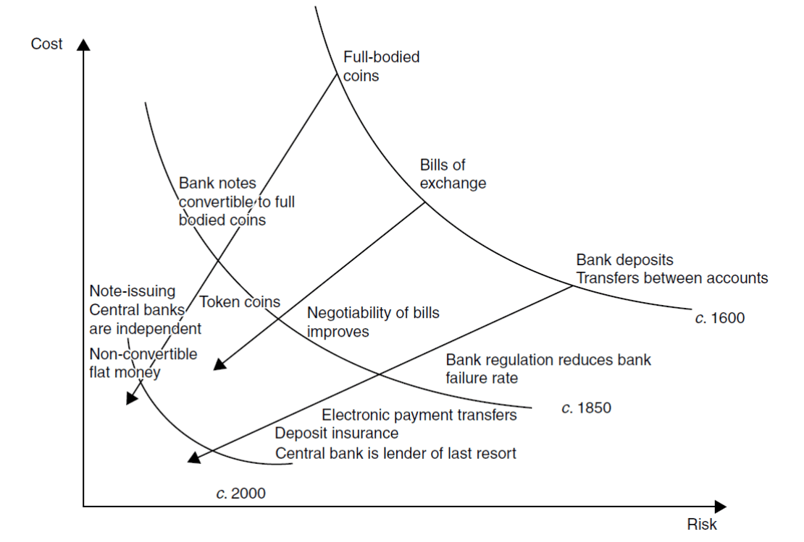

6. fejezet · diák: 105–115
Pénz és pénzügyi piacok
„Engedjétek át nekem egy nemzet pénzét, és nem érdekel, ki írja a törvényeket.”
Mayer Amschel Rothschild
Az eddigi fejezetekben a hatékonyság forrásait kerestük: kereskedelem, népesség, intézmények, tudás. Mindegyikhez kell valami, amiről eddig keveset beszéltünk: pénz, amivel cserélünk, és hitel, amivel a jövő ötleteit ma finanszírozzuk.
Nyitó eset: M-PESA, Kenya 105–106. dia
Kenyában több mint egy évtizeddel hamarabb lehetett mobillal fizetni a taxiban, mint New Yorkban, a pénzügyi világ központjában. Hogyan lehetséges ez?
A hitelkártya kényelmes, de nem olcsó: a nagy közvetítők (Visa, Mastercard, American Express) leveszik belőle a részüket. Ráadásul bankszámla kell hozzá, a kenyaiak többsége pedig olyan szegény volt, hogy a bankok szóba sem álltak velük. A pénzátutalás távolsági buszokkal történt: a készpénzt odaadták a buszon utazó pénzszállítónak, aki eljuttatta a célállomásra – drágán, lassan és kockázatosan.
2005-ben, még az okostelefonok előtt, a brit Vodafone kísérleti programot indított M-PESA néven: az ügyfelek a feltöltőkártyákhoz hasonlóan pénzt tölthettek a telefonjukra, és ebből törlesztették a hiteleiket. 2007-től bárki utalhatott bárkinek, és néhány év alatt szinte minden kenyai a mobiljával fizetett.
Egy tanulmány szerint az M-PESA felhasználóinak jövedelme 5–30%-kal nőtt a rendszernek köszönhetően: olcsóbban, gyorsabban fizethettek egymásnak, és a rendszerben lévő pénzük után még kamatot is kaptak. A mobilpénz különböző formái a fintech cégekkel Magyarországra is beszivárognak.
Az eset rámutat a fejezet lényegére: a pénz és a pénzügyi rendszer nem „csak” a gazdagok ügye. Ha a fizetés olcsóbb és biztonságosabb lesz, a szegények is többet kereskedhetnek, takaríthatnak meg és fektethetnek be. A pénzügyi innováció tehát ugyanúgy növeli a hatékonyságot, mint egy új gép.
A fejezet kérdése: hogyan segíti a pénz, a bank és a tőzsde a gazdasági fejlődést – és miért teszi egyúttal sérülékenyebbé a gazdaságot?
Útiterv
✏️ Gondold végig – M-PESA
- Miért terjedt el a mobilfizetés hamarabb Kenyában, mint New Yorkban?
Mintaválasz
Mert Kenyában nem volt jó alternatíva: a többségnek nem volt bankszámlája, a készpénz buszos szállítása drága és kockázatos volt. New Yorkban a bankkártya kényelmes megoldást adott, így ott kisebb volt az igény az újításra. (Ez a „visszamaradottság előnyének” egy formája is: a lemaradó átugorhat egy fejlődési lépcsőt.)
- Hogyan növelhette egy fizetési rendszer a felhasználók jövedelmét?
Mintaválasz
Csökkentette a tranzakciós költségeket és a kockázatot: olcsóbb és gyorsabb lett a csere, több üzlet érte meg, a családok könnyebben küldhettek egymásnak pénzt, és a megtakarítás biztonságban volt (még kamatot is hozott).
A pénz születése és fejlődése 107–109. dia
Kezdjük az elején: pénz nélkül barterrel, áru áruért cserélnénk. Ennek két nagy hátránya van: kell hozzá az igények találkozása (olyan partner, akinek épp az kell, amit én adok, és épp az van neki, ami nekem kell), és az árak nem követhetők világosan (mennyi kenyér egy eke? és mennyi sör?).
Tranzakciós költség: egy gazdasági ügylet lebonyolításának járulékos költsége – a partner felkutatása, az alku, az ellenőrzés, a szállítás. A barterkereskedelemnek nagyon magas a tranzakciós költsége.
A pénz vélhetően spontán született innováció, gazdasági intézmény, amely úgy javította a hatékonyságot, hogy csökkentette a piaci ügyletek tranzakciós költségét.
Hogyan lesz a búzából pénz?
Nézzünk egy kis falut négy mesteremberrel. Barterrel nem jönne létre minden csere: a kovácsnak sör és kenyér kell, de a pék és a serfőző nem kér ekét. Ekét csak a paraszt akar – neki viszont csak búzája van.
| Szereplő | Elad | Mire van szüksége? | Mit kap? |
|---|---|---|---|
| Pék úr | kenyér | búza | búza |
| Paraszt úr | búza | eke | eke |
| Kovács úr | eke | sör és kenyér | búza (pénz) |
| Serfőző úr | sör | kenyér | búza (pénz) |
A megoldás: a kovács elfogadja a paraszttól a búzát az ekéért, pedig neki nem búza kell – tudja, hogy a búzát mindenki elfogadja. A búzával kenyeret vesz a péktől és sört a serfőzőtől; a serfőző a kapott búzával kenyeret vesz. A búza pénzzé vált: nem azért fogadják el, mert megeszik, hanem mert továbbadhatják.
A hagyományos pénznek belső értéke van (a búzát meg lehet enni, az aranyat fel lehet használni). A pénz három funkciót tölt be:
- forgalmi eszköz – a kovács arra használja, hogy megszerezze a szükséges árut;
- felhalmozási eszköz – megőrzi az értékét, amíg nem akarjuk árura váltani;
- értékmérő, elszámolási eszköz – a piac rögzíti, hogy egy egység búza mennyi sörre, kenyérre, ekére váltható.
Pénzevolúció
A pénz azóta folyamatosan fejlődik. Minden lépés egy-egy problémára adott válasz volt – és mindegyik lépéssel nőtt a bizalom szerepe.
- Pénzhelyettesítők – a váltó. A nemesfém pénz a távolsági kereskedelemben kényelmetlen (nehéz, lopható). Váltó: az adós ígérete, hogy egy jövőbeli időpontban meghatározott összeget kifizet. Itáliából indult, a 13. századtól terjedt el, és a 20. századig domináns volt. A váltó maga is pénzhelyettesítővé vált: forgalmi eszközként adták tovább, akár az érméket. A 15. századtól kialakult szabályok szerint mindenki, akinek a kezén átment, felelősséget vállalt azért, hogy az adós végül fizet – így csökkent a kockázata.
- Részleges tartalékkal működő bank. A bank összegyűjti a betétesek pénzét és váltóit, de nagyobb részét nem tartalékolja, hanem hitelként kiadja, befekteti. A 14. századi Itáliában jelent meg (a bank szó a banca, pad szóból ered). Hatása kettős: növeli a pénzkínálatot, de gyakoriak a bankrohamok és csődök.
- Váltóleszámítolás (diszkontálás): a váltót lejárat előtt megveszik, a névértéknél alacsonyabb (diszkontált) áron. A 16. századi Antwerpenben alakult ki, a vallásüldözés elől menekülő antwerpeniek honosították meg Londonban. Így kialakult a váltók piaca, a tőzsde előfutára, amely biztosította a pénzügyi szereplők likviditását.
- Klíringbank: olyan bank, amelynél a többi bank vezeti a számláját, és amely lebonyolítja a közöttük lévő átutalásokat. Az első: az Amsterdamsche Wisselbank (1609).
- Jegybankok – a végső hitelező. 1657-ben a Stockholms Banco ezüstöt és érméket fogadott betétként, és bankjegyeket nyomtatott – de túl sokat, amit a betétek nem fedeztek. A bukásából született 1668-ban a Riksbank. 1694-ben megalakult a Bank of England; Sir Robert Peel 1844-es jegybanktörvénye szerint az Angol Bank az aranytartalékán felül csak az államadósság (11 millió font) + 3 millió font értékben bocsáthatott ki bankjegyet.
- Papírpénz (fiat pénz): belső értékkel nem rendelkező, a bizalmon alapuló pénz. A fejlett országokban az 1930-as évektől jelent meg.
A végső hitelező (lender of last resort) azt jelenti, hogy bankroham idején a jegybank kölcsönt ad a bankoknak, hogy ki tudják fizetni a betéteseket. Ha a betétesek tudják, hogy erre van mód, nincs okuk pánikszerűen kivenni a pénzüket – így a roham meg sem indul. A fiat pénz pedig csak addig működik, amíg bízunk benne, hogy holnap is elfogadják: értékét nem az anyaga, hanem a kibocsátó (az állam és a jegybank) hitelessége adja.
A részleges tartalékolás nem „csalás”: ez teszi lehetővé, hogy a megtakarítás hitellé váljon. Kockázata viszont a bankroham – ha egyszerre mindenki kéri vissza a pénzét, egyetlen bank sem tudja kifizetni. Ez a 7. fejezet egyik kiindulópontja (Palmstruch).
✏️ Gondold végig – A pénz születése
- Miért mondjuk, hogy a pénz intézmény?
Mintaválasz
Mert szabály és norma: azért működik, mert mindenki elfogadja, és tudja, hogy mások is elfogadják. Spontán alakult ki, mert csökkentette a barter magas tranzakciós költségét (az igények találkozásának szükségességét és az árak áttekinthetetlenségét).
- Egy börtönben a cigaretta lesz a fizetőeszköz. Melyik három pénzfunkciót tölti be?
Mintaválasz
Forgalmi eszköz (cigarettáért lehet szolgáltatást, ételt cserélni), felhalmozási eszköz (el lehet tenni későbbre), értékmérő (mindent „hány szál cigarettában” árazunk). Belső értéke is van – akár a búzának a példában.
- Milyen előnnyel és milyen kockázattal jár a részleges tartalékkal működő bank?
Mintaválasz
Előny: a betétek nagyobb részét hitelként kiadja, így bővül a pénzkínálat és a beruházás. Kockázat: ha a betétesek egyszerre kérik vissza a pénzüket (bankroham), a bank nem tud fizetni, és csődbe mehet. Erre a kockázatra válasz a jegybank mint végső hitelező.
A bankok közvetítő szerepe és hatása a növekedésre 110–111. dia
Képzeld el, hogy van megtakarított pénzed, és a szomszéd városban valaki gyárat akar építeni. Miért nem adod neki közvetlenül kölcsön? Mert nem ismered, nem tudod, megbízható-e, és lehet, hogy jövő hónapban kell a pénzed. A vállalkozónak pedig nem egy, hanem száz ilyen megtakarítót kellene felkutatnia. A bank mindkét problémát megoldja:
| A megtakarító problémája | A bank közvetítése | A befektető problémája |
|---|---|---|
| Költséges a lehetséges hitelfelvevők értékelése | Méretgazdaságossági előnyökkel hatékonyan felméri az ügyfelek fizetőképességét | Költséges a lehetséges hitelezők felkutatása |
| Kevésbé kockázatos, ha több adós között oszlik meg a kockázat | Széles portfóliót képez | Kevésbé költséges, ha nem sok hitelezőtől kell összeszedni a pénzt |
| Likvid formában jobb megtakarítani | Tartalékot tart, amivel kielégíti a betétesek likviditási igényét | Hosszú távú hitel kell a tőkebefektetéshez |
| Aszimmetrikus információ az adós fizetőképességéről | Profin ellenőrzi a cégeket, kapcsolatot épít ki, átalakítja a hitelek időtávját | Aszimmetrikus információ az adós fizetőképességéről |
Aszimmetrikus információ: az ügylet egyik fele többet tud, mint a másik – az adós jobban ismeri a saját fizetőképességét, mint a hitelező. A bank szakértelemmel és tartós kapcsolattal csökkenti ezt az információs hátrányt. A lejárati transzformáció pedig azt jelenti, hogy a bank rövid lejáratú (bármikor felvehető) betétekből hosszú lejáratú hiteleket ad.
Hogyan hatnak a bankok a növekedésre?
- Növelik a megtakarítási rátát: ha a bank kamatot fizet, a készpénz tartásának alternatív költsége megnő – megéri betenni a pénzt. A megtakarítási ráta korábban 5% alatt volt, a 19. század második felében 10–20%-ra emelkedett.
- Bővítik a pénzkínálatot a részleges tartalékolással. [V] Rousseau szerint 1730 és 1850 között a pénzkínálat 1%-os emelkedése 5 éven belül 2%-kal növelte az ipari kibocsátást.
- Enyhítik a fizetőképesség és az adóskockázat felmérésének tranzakciós költségét.
A bankoknak két típusa van: a kereskedelmi bankok a megtakarításokat gyűjtik, a befektetési bankok a részvényesek pénzét kockázatosabb hitelekbe helyezik. A 19. században két banki modell alakult ki:
Tranzakciós bankok (Anglia)
A 19. század második felében rövidebb távú, biztonságosabb befektetésekre törekedtek.
Kapcsolati bankok (Franciaország, főleg Németország)
Szívesen hitelezték a nagyvállalatok kockázatos fejlesztési ötleteit; tartós kapcsolatban álltak velük, a bank képviselői részt vettek az igazgatótanácsban. Lehet, hogy ezért nőtt gyorsabban Németország ebben az időszakban.
Ez összecseng a 2. ipari forradalommal (5. fejezet): a német vegyipar és nehézipar óriási, hosszú távú beruházásokat igényelt, amelyeket a kapcsolati bankok finanszíroztak. Gerschenkron szerint a „visszamaradott” országok épp az ilyen intézményekkel pótolták a hiányzó tőkét.
✏️ Gondold végig – A bankok szerepe
- Miért gyorsíthatta a bankrendszer fejlődése a 19. századi iparosodást? (Mintazh 6.)
Mintaválasz
Mert összegyűjtötte a megtakarításokat (nőtt a megtakarítási ráta), felmérte a kockázatot és a fizetőképességet (csökkentette a tranzakciós költséget és az információs aszimmetriát), és hosszú távú hitelt adott a beruházásokhoz – a rövid távú betétekből. A részleges tartalékolással a pénzkínálat is bővült.
- Miért nőhetett gyorsabban Németország, mint Anglia a 19. század végén – a bankrendszer szemszögéből?
Mintaválasz
A német kapcsolati bankok hosszú távon és kockázatvállalóan finanszírozták a nagyvállalatok fejlesztéseit, ott ültek az igazgatótanácsokban, így jól ismerték a cégeket. Az angol tranzakciós bankok rövid távú, biztonságos befektetéseket kerestek, és kevésbé támogatták a nagy, kockázatos innovációkat.
A tőzsdék szerepe 112–113. dia
- A 19. század második feléig a tőzsdéken főleg államkötvényekkel (európai találmány) és nagy, állami monopóliummal bíró kereskedőcégek részvényeivel kereskedtek.
- Az első, mai értelemben vett részvénytársaságok a vasút, a pénzügyek és a bányaipar területén működtek – ott, ahol óriási tőke kellett (vö. korlátolt felelősség, 4. fejezet).
- [V] Az információs aszimmetriák miatt a tőzsde mindig is inkább a gazdagabbak pénzét vonzotta – nekik volt pénzük tájékozódni és kockáztatni.
- Bár mindkét intézmény közvetít a megtakarító és a befektető között, a bank és a tőzsde inkább kiegészíti egymást, semmint rivális intézmények lennének.
A pénzügyi rendszer egész fejlődését egyetlen ábra foglalja össze. A vízszintes tengelyen a kockázat, a függőlegesen a tranzakciós költség van. Minden új pénzügyi intézmény – a teljes értékű érmétől a váltón és a bankbetéten át az elektronikus átutalásig – lefelé és balra tolta a rendszert: a csere egyszerre lett olcsóbb és biztonságosabb.

✏️ Gondold végig – A tőzsdék
- Miért egészíti ki egymást a bank és a tőzsde?
Mintaválasz
A bank a kisebb, ismert ügyfeleknek és a biztonságosabb, hitelalapú finanszírozásnak kedvez, és a betéteseknek likviditást ad. A tőzsde a nagy, kockázatos vállalkozásoknak (vasút, bányák) szerez sok befektetőtől tulajdonosi tőkét. Más-más igényt szolgálnak ki, ezért együtt mélyítik a pénzügyi rendszert.
- Mit mutat a 113. dia ábrája a pénzügyi innovációkról?
Mintaválasz
Hogy minden új intézmény (váltó, bankbetét, bankjegy, szabályozás, betétbiztosítás, végső hitelező) egyszerre csökkentette a csere költségét és kockázatát. A pénzügyi fejlődés tehát a tranzakciós költségek csökkentésének története.
Harari: a hitel mint a jövőbe vetett bizalom 114–115. dia
Miért csak az utolsó 500 évben robbant be a hitel? Yuval Noah Harari Sapiens (2015) című könyvében egy vitatott, de elgondolkodtató választ ad.
- „Az újkor előtt… a legtöbb esetben a pénz csak olyan dolgokat volt képes képviselni, és egymásba átalakítani, amelyek valóban léteztek a jelenben.”
- „Az elmúlt 500 évben a haladás eszméje diadalmaskodott, az emberek több és több bizalmat fektettek a jövőbe.”
- „Ez a bizalom hozta létre a hitelt.”
- „A hitel lehetővé teszi, hogy a jövő számlájára építsük a jelent.”
- „A hitel gazdasági növekedést hozott, a növekedés pedig tovább erősítette a jövőbe vetett bizalmat, és még több hitel előtt nyitott utat.”
bizalom a jövőben → hitel → beruházás ma → növekedés → még nagyobb bizalom → még több hitel
Ez is pozitív visszacsatolás – de figyeld meg, hogy visszafelé is működhet: ha a bizalom megrendül, a hitel elapad, és a növekedés is megtorpan. Erről szól a következő fejezet.
✏️ Gondold végig – Harari
- Miért kapcsolódik a hitel a haladás eszméjéhez Harari szerint?
Mintaválasz
Hitelt csak az ad, aki hisz abban, hogy a jövő jobb lesz, és az adós vissza tudja fizetni a tartozást. Amíg az emberek nem hittek a növekedésben (a gazdaság „tortája” nem nő), a hitel zéró összegű játszmának tűnt. A haladásba vetett hit tette lehetővé, hogy a jövő számlájára építsük a jelent.
Összefoglalás: a fejlettségi szint és a sérülékenység együtt nő 115. dia
- A pénz csökkenti a csere költségét; a bankok és tőzsdék összekötik a megtakarítást a beruházással.
- A hitel lehetővé teszi, hogy jövőbeli hozamokra építve ma ruházzunk be.
- Az információs aszimmetria, a tőkeáttétel és a lejárati különbség törékennyé teszi a rendszert.
- A pénzügyi mélyülés segítheti a növekedést, de nem garantálja, hogy a tőkét termelékeny célra fordítják.
Tőkeáttétel: amikor valaki nagyrészt kölcsönpénzből vásárol – ez a nyereséget és a veszteséget is felnagyítja. Lejárati különbség: a bank rövid lejáratú betétekből hosszú lejáratú hitelt ad – ha a betétesek egyszerre jönnek, nem tud fizetni.
Válasz a fejezet kérdésére: a pénz és a pénzügyi rendszer csökkenti a tranzakciós költségeket és a kockázatot, összegyűjti a megtakarítást, és a jövőbe vetett bizalom révén hitelt ad a beruházásokhoz – ezért gyorsítja a fejlődést. Ugyanezek a mechanizmusok (részleges tartalék, tőkeáttétel, lejárati különbség, bizalom) teszik azonban sérülékennyé: minél fejlettebb a pénzügyi rendszer, annál nagyobbat lehet esni.
Esszéhez: ha ezt látod → ezt használd
| Ha az esetben ez áll… | …akkor ezt a fogalmat / mechanizmust használd |
|---|---|
| Új fizetési mód olcsóbbá teszi a cserét (pl. mobilpénz) | tranzakciós költség csökkentése; a pénz mint intézmény (→, →) |
| Bankrendszer épül ki, nő a beruházás | a bank közvetít a megtakarító és a befektető között; nő a megtakarítási ráta (→) |
| Gyorsan iparosodó, „későn jövő” ország nagy bankokkal | kapcsolati bankok (német modell) (→) |
| Nagy, tőkeigényes vállalkozások (vasút, bánya) | tőzsde, részvénytársaság, korlátolt felelősség (→) |
| A bizalom megrendül, a betétesek pánikba esnek | részleges tartalék kockázata, bankroham; végső hitelező (→) |
| Hitelből finanszírozott gyors növekedés | Harari: a hitel mint bizalom; tőkeáttétel és törékenység (→) |
| Hiányzik a vállalkozásindítás finanszírozása | a pénzügyi rendszer mint a technológiatranszfer feltétele (→) |
Kapcsolódások
- Intézmények, tranzakciós költség, korlátolt felelősség (4. fejezet).
- A transzfer és az innováció finanszírozása (5. fejezet).
- Válságok, buborékok, Palmstruch (7. fejezet) – a sérülékenység másik oldala.
- A nemzetközi monetáris rend, aranystandard (12. fejezet).
- Szintézis (15. fejezet): a pénzügyi rendszer a transzfer és az innováció feltétele, de a sokkokat kezelő intézmények nélkül sérülékeny.